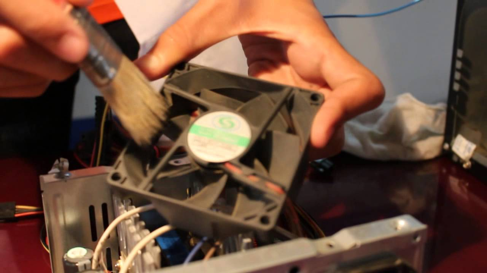

Mantenimiento
Este tipo de mantenimento es preventivo, se recomienda sea realizado de manera rutinaria para reducir la posibilidad de fallas del equipo. Esto se realiza cuando el equipo está en buenas condiciones, antes de que ocurra una falla. El objetivo del mantenimiento preventivo es identificar las señales tempranas de un defecto para minimizar el riesgo de averías no programadas y reducir la necesidad de realizar mantenimiento correctivo. Las tareas de mantenimiento, como limpiar los equipos, reemplazar los componentes desgastados y lubricar las piezas, garantizan que su instalación tenga el mayor rendimiento..
Mantenimiento TechFix
Se brinda limpieza de archivos, revisión de virus y malware, revisión y desfragmentación de disco duro, desmantelamiento para limpieza interna
Precio Regular $499
